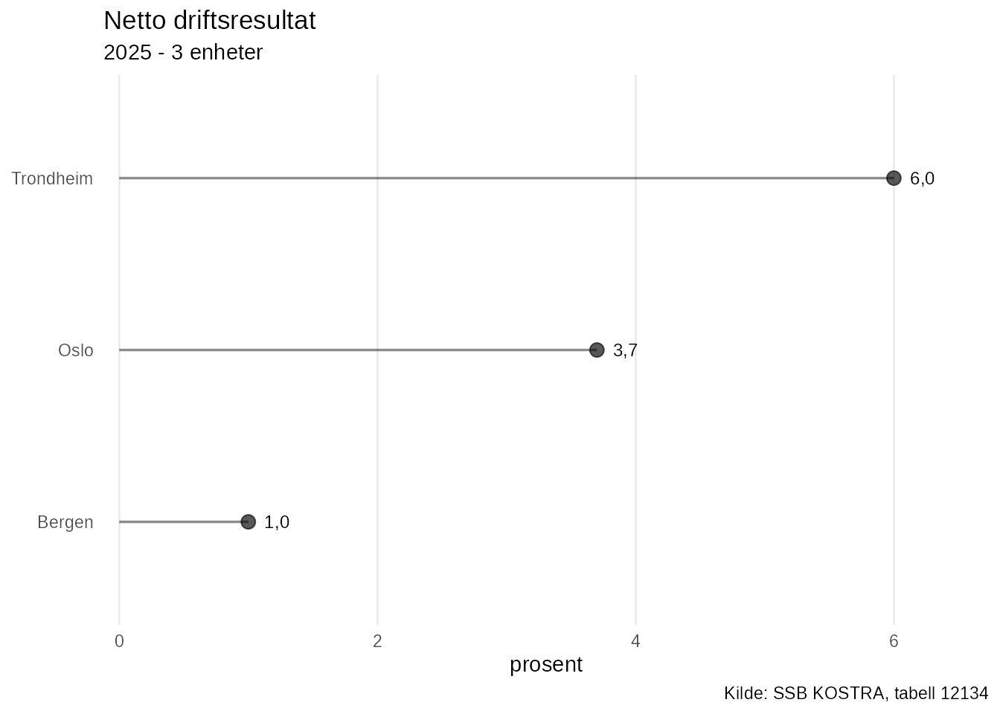
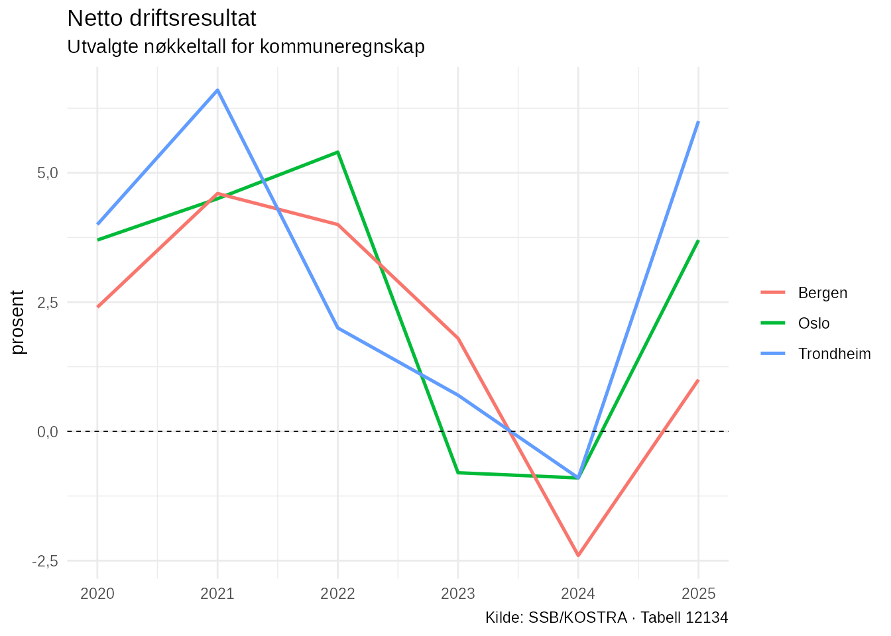

NorMacro inneholder verktøy for å arbeide med kommunale og regionale data fra KOSTRA.
KOSTRA-data skiller seg fra de vanlige makroøkonomiske tidsseriene ved at datasettet inneholder observasjoner for flere geografiske enheter. Dette gjør det mulig å sammenligne kommuner, undersøke utviklingen over tid og vurdere en kommune mot andre kommuner.
Denne vignetten viser en grunnleggende arbeidsflyt:
- undersøk KOSTRA-datasettet
- se hvilke indikatorer datasettet inneholder
- oppsummer en indikator
- ranger kommuner
- sammenlign utviklingen mellom kommuner
- visualiser resultatene
Eksempeldata
For å gjøre eksemplene reproduserbare bruker vi det statiske
eksempeldatasettet normacro_kostra_example.
data(normacro_kostra_example)
normacro_kostra_example
#> # A tibble: 18 × 7
#> Enhet Enhet_navn Enhetstype Aar Netto_driftsresultat Langsiktig_gjeld_ute…¹
#> <chr> <chr> <chr> <int> <dbl> <dbl>
#> 1 0301 Oslo kommune 2020 3.7 83.4
#> 2 0301 Oslo kommune 2021 4.5 82
#> 3 0301 Oslo kommune 2022 5.4 86.5
#> 4 0301 Oslo kommune 2023 -0.8 93.8
#> 5 0301 Oslo kommune 2024 -0.9 107.
#> 6 0301 Oslo kommune 2025 3.7 111.
#> 7 4601 Bergen kommune 2020 2.4 91
#> 8 4601 Bergen kommune 2021 4.6 94
#> 9 4601 Bergen kommune 2022 4 96
#> 10 4601 Bergen kommune 2023 1.8 101
#> 11 4601 Bergen kommune 2024 -2.4 108
#> 12 4601 Bergen kommune 2025 1 101.
#> 13 5001 Trondheim kommune 2020 4 95
#> 14 5001 Trondheim kommune 2021 6.6 98
#> 15 5001 Trondheim kommune 2022 2 100
#> 16 5001 Trondheim kommune 2023 0.7 105
#> 17 5001 Trondheim kommune 2024 -0.9 112
#> 18 5001 Trondheim kommune 2025 6 114.
#> # ℹ abbreviated name: ¹Langsiktig_gjeld_uten_pensjonsforpliktelser
#> # ℹ 1 more variable: Frie_inntekter_per_innbygger <dbl>Datasettet inneholder utvalgte nøkkeltall for Oslo, Bergen og Trondheim for perioden 2020–2025.
Et KOSTRA-datasett i NorMacro har noen faste identifikasjonskolonner:
-
Enheter enhetens kode -
Enhet_navner navnet på kommunen eller den regionale enheten -
Enhetstypeangir hvilken type enhet observasjonen gjelder -
Aarangir observasjonsåret
De øvrige kolonnene er KOSTRA-indikatorer.
Få oversikt over datasettet
En naturlig start er:
overview_kostra_data(normacro_kostra_example)
#>
#> KOSTRA-data
#> ===========
#>
#> Tabell: 12134
#> Tema: Utvalgte nøkkeltall for kommuneregnskap
#>
#> Kommunale og regionale nøkkeltall fra KOSTRA.
#>
#> Dekning
#> -------
#> Periode: 2020-2025
#> Observasjoner: 18
#> Enheter: 3
#> Variabler: 3
#>
#> Enhetstyper
#> -----------
#> kommune 3overview_kostra_data() viser blant annet hvilken
KOSTRA-tabell datasettet kommer fra, hvilken periode det dekker, hvor
mange enheter det inneholder og hvor mange indikatorer som er
tilgjengelige.
NorMacro lagrer informasjon om KOSTRA-tabellen som attributter på datasettet. Det gjør at flere funksjoner kan identifisere tabellen automatisk.
Metadata og indikatorer
Metadata for KOSTRA-tabellen kan hentes direkte fra datasettet:
kostra_metadata <- get_kostra_metadata(
data = normacro_kostra_example
)
kostra_metadata
#> # A tibble: 9 × 5
#> ContentsCode Variabel Display_navn Enhet Analyse_type
#> <chr> <chr> <chr> <chr> <chr>
#> 1 KOSAGD230000 Netto_driftsresultat Netto drift… pros… rate
#> 2 KOSAGD290000 Merforbruk_driftsregnskap Årets merfo… pros… rate
#> 3 KOSKG280000 Arbeidskapital_uten_premieavvik Arbeidskapi… pros… rate
#> 4 KOSKG400000 Netto_renteeksponering Netto rente… pros… rate
#> 5 KOSKG320000 Langsiktig_gjeld_uten_pensjonsfo… Langsiktig … pros… rate
#> 6 KOSAG110000 Frie_inntekter_per_innbygger Frie inntek… kr nivå
#> 7 KOSKG210000 Fri_egenkapital_drift Fri egenkap… pros… rate
#> 8 KOSAGI10000 Brutto_investeringsutgifter Brutto inve… pros… rate
#> 9 KOSAGI210000 Egenfinansiering_investeringer Egenfinansi… pros… rateMetadataene viser blant annet indikatorenes variabelnavn, visningsnavn, måleenhet og analysetype.
I resten av vignetten bruker vi indikatoren:
Netto_driftsresultatMetadataene viser at dette er netto driftsresultat målt i prosent.
Oppsummer en indikator
kostra_summary() gir en statistisk oppsummering av en
indikator for ett år.
Dersom year ikke oppgis, brukes siste tilgjengelige
år:
kostra_summary(
"Netto_driftsresultat",
data = normacro_kostra_example
)
#> # A tibble: 1 × 10
#> Variabel Aar Antall_enheter Gjennomsnitt Median Minimum Q1 Q3 Maksimum
#> <chr> <int> <int> <dbl> <dbl> <dbl> <dbl> <dbl> <dbl>
#> 1 Netto_d… 2025 3 3.57 3.7 1 2.35 4.85 6
#> # ℹ 1 more variable: Standardavvik <dbl>Her får vi blant annet antall enheter, gjennomsnitt, median, kvartiler, minimum og maksimum.
Dette gir et raskt bilde av hvordan indikatoren fordeler seg mellom enhetene i datasettet.
Ranger kommuner
Kommunene kan rangeres etter en bestemt indikator med
rank_kostra().
rank_kostra(
"Netto_driftsresultat",
data = normacro_kostra_example,
year = 2025
)
#> # A tibble: 3 × 6
#> Rang Enhet Enhet_navn Enhetstype Aar Verdi
#> <int> <chr> <chr> <chr> <int> <dbl>
#> 1 1 5001 Trondheim kommune 2025 6
#> 2 2 0301 Oslo kommune 2025 3.7
#> 3 3 4601 Bergen kommune 2025 1Som standard rangeres høyeste verdi først.
Rangeringen kan også visualiseres:
plot_kostra_ranking(
"Netto_driftsresultat",
data = normacro_kostra_example,
year = 2025
)
Figuren gjør det enkelt å se forskjellene mellom kommunene i det valgte året.
Det er viktig å tolke en rangering i lys av indikatoren som analyseres. En høy verdi er ikke nødvendigvis økonomisk bedre for alle KOSTRA-indikatorer.
Sammenlign kommuner over tid
Et øyeblikksbilde for ett år forteller ikke hele historien. Ofte er det minst like interessant å undersøke hvordan kommunene har utviklet seg over tid.
compare_kostra_units() kan brukes til dette:
compare_kostra_units(
"Netto_driftsresultat",
data = normacro_kostra_example,
units = c("0301", "4601", "5001"),
start_year = 2020
)
#> # A tibble: 3 × 12
#> Rang Enhet Enhet_navn Enhetstype Aar Verdi Startaar Sluttaar Startverdi
#> <int> <chr> <chr> <chr> <int> <dbl> <dbl> <int> <dbl>
#> 1 1 5001 Trondheim kommune 2025 6 2020 2025 4
#> 2 2 0301 Oslo kommune 2025 3.7 2020 2025 3.7
#> 3 3 4601 Bergen kommune 2025 1 2020 2025 2.4
#> # ℹ 3 more variables: Sluttverdi <dbl>, Endring <dbl>,
#> # Endring_prosentpoeng <dbl>Resultatet viser både siste verdi og endringen siden startåret.
Her brukes KOSTRA-kodene:
-
0301– Oslo -
4601– Bergen -
5001– Trondheim
Dette gjør det mulig å kombinere dagens nivå med utviklingen over en lengre periode.
Visualiser utviklingen
KOSTRA-data kan også brukes direkte med
plot_series().
plot_series(
"Netto_driftsresultat",
data = normacro_kostra_example
)
Når datasettet inneholder flere kommuner, tegnes én tidsserie for hver enhet.
NorMacro bruker informasjonen som er lagret på KOSTRA-datasettet til å legge inn blant annet tabelltittel, måleenhet og kilde i figuren.
Dette gjør plot_series() nyttig både for vanlige
makroøkonomiske tidsserier, internasjonale data og KOSTRA-data.
Fra eksempeldata til egne KOSTRA-analyser
Eksempeldatasettet er lite for at vignetten skal kunne bygges raskt og uten eksterne API-kall. I en faktisk analyse vil man normalt arbeide med flere kommuner og eventuelt flere indikatorer.
NorMacro inneholder funksjoner for å hente og standardisere KOSTRA-data, samt mer avanserte verktøy for blant annet benchmarking mot KOSTRA-grupper og andre sammenligningsgrunnlag.
Den grunnleggende arbeidsflyten er likevel den samme:
hent data → undersøk datasettet → forstå indikatoren → sammenlign enheter → analyser utviklingen → visualiser resultatene
Når denne arbeidsflyten er kjent, kan de mer avanserte benchmark-funksjonene brukes til å bygge videre på analysen.